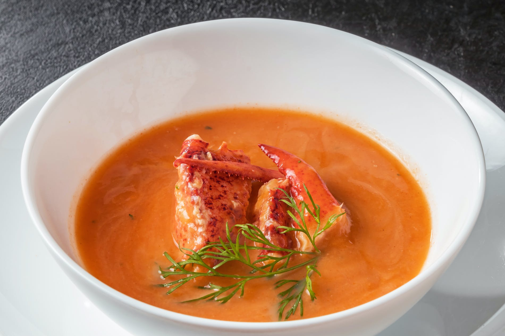

The first step is to remove the lobster meat from the shells. The shells are then added to a pot with the seafood stock, water, herbs and salt. The stock is cooked over low heat, uncovered, for about 15 minutes. Once the flavors of the stock develop, the lobster meat is added and cooked just until it starts to firm and is no longer opaque. The lobster is removed from the stock and chopped into bite sized pieces. It will be added to the soup just before serving. The bisque can be made while the stock is cooking, thus decreasing the overall time it takes to make this recipe.
The mirepoix is cooked in butter until the vegetables are tender and slightly browned. The garlic is then added followed by the tomato paste. All-purpose flour is added to this mixture and allowed to cook for a bit. This is what will help thicken the lobster bisque. Once the flour is mixed in, the ingredients will really begin to stick to the bottom of the pan. The white wine is added for flavor but also to deglaze the pan. It will immediately thicken. Using a fine mesh strainer, add all of the lobster stock to the bisque while straining the shells. Using a counter top blender or an immersion blender, puree the soup. At the very end, stir in the heavy cream along with the cooked lobster meat and cook just until heated through.
Back to all recipes